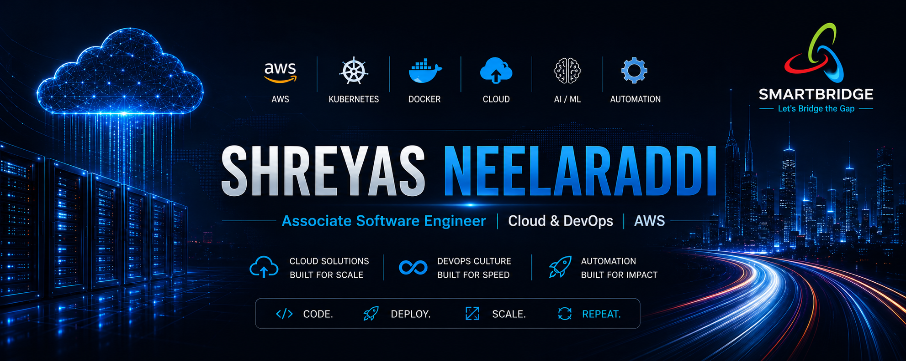
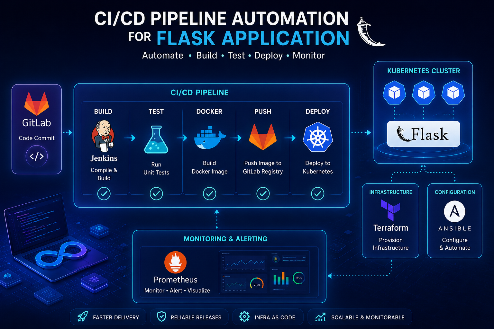
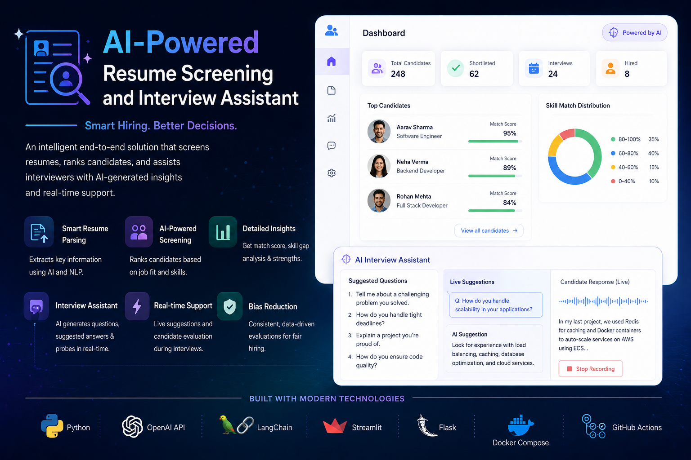

Shreyas
Neelaraddi
I architect resilient cloud infrastructure and automated systems. Specialized in AWS, Kubernetes, and building deployment pipelines that scale.

$ terraform apply --auto-approve
aws_instance.web: Creating...
aws_rds_cluster.main: Creating...
Apply complete! Resources: 12 added.
$
0
0
// Proficiency
Technical Arsenal
Cloud & DevOps
CI/CD & Automation
Monitoring
// Portfolio
Featured Engineering

CI/CD Pipeline Automation (Flask + Kubernetes + AWS)
End-to-end pipeline automating build, test, and deployment phases. Designed for high availability and speed on AWS infrastructure.
AI Resume Assistant (OpenAI + LangChain)
GenAI-powered system for context-aware candidate screening using vector search and LLMs.

// System Design
Architecture Blueprints
Code is pushed → automatically built → containerized → deployed → monitored in production.
CI/CD Deployment Pipeline
// Philosophy
Engineering Mindset
Automate Everything
If it can be scripted, it should be scripted. Eliminating toil increases velocity and reliability.
Infrastructure as Code
Managing infrastructure through version control ensures consistency, audit trails, and rapid recovery.
Observability First
You can't fix what you can't see. Monitoring and logging are foundational layers, not afterthoughts.
Resilience Engineering
Designing systems that anticipate failure and recover gracefully is the cornerstone of reliability.
// Career
Experience
Associate Software Engineer
SmartBridge · Hyderabad, Telangana
- Building & deploying production-grade software solutions.
- Working with cloud infrastructure & DevOps workflows.
- Collaborating with cross-functional engineering teams.
- Applying CI/CD, containerization & automation practices.
AI/ML Intern
VTU WIINNR (IT Ignition Program)
- Built ML pipelines (Python, GitHub Actions).
- Docker deployment on AWS EC2.
- IaC using Terraform & Ansible.
- Monitoring with Prometheus & Grafana.
AI Intern
Agnirva (Fast Track Program)
- Optimized LLM prompt workflows.
- Built RAG capstone project.
// Credentials
Certifications
Introduction to DevOps
IBM (Coursera)
DataCamp Certifications
AWS Cloud • Security • Python • SQL
AI/ML Internship Certificate
VTU WIINNR
// Connect
Get In Touch
Open to DevOps opportunities and cloud architecture discussions.
Typically responds within 24 hours